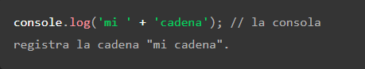
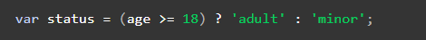

1) Esta ECMAScript 1 (ES1, 1997), ECMAScript 2 (ES2, 1998), ECMAScript 3 (ES, 1999), ECMAScript 5 (ES5, 2009), ECMAScript 2015 (ES5), ECMAScript 2016 (ES7), ECMAScript 2017 (ES8), ECMAScript 2018 (ES9), ECMAScript 2019 (ES10) y ECMAScript 2020 (ES11).
2) Se puede integrar de 2 maneras:
- Insertando el codigo de JS con la etiqueta "<script> </script>" en el head o en el body del HTML
- agregandolo como un archivo separado con "<script src="Origen del archivo JS"> </script>".
3) JavaScript tiene 3 tipos de variables:
- var: declara una variable, opcionalmente la inicia a un valor
- let: declara una variable local con ámbito de bloque, opcionalmente la inicia a un valor.
- const: Declara un nombre de constante de solo lectura y ámbito de bloque.
JavaScript tiene 9 tipos de datos, 6 primitivos, 3 modernos.
Los primitivos son:
- Undefined: declara un nombre de constante de solo lectura y ámbito de bloque.
- Boolean: en ciencias de informática, un boolean es un dato lógico que solo puede tener los valores true o false.
- Number: en JavaScript, Number es un tipo de datos numérico (double-precision 64-bit floating point format (IEEE 754)). En otros lenguajes de programación puede existir diferentes tipos numéricos, por ejemplo: Integers, Floats, Doubles, or Bignums.
- String: En JavaScript, un String es uno de los valores primitivos y el objeto String es un envoltorio alrededor de un String primitivo.
- BigInt: En JavaScript, BigInt es un tipo de dato numerico que puede representar números enteros en el formato de precision arbitrario.
- Symbol: es un objeto incorporado cuyo constructor devuelve un symbol primitivo — también llamado Symbol value o simplemente Symbol — que está garantizado que sea único. Los Symbols se utilizan a menudo para añadir claves de propiedades únicas a un objeto que no sean iguales a las claves que cualquier otro código pueda añadir al objeto, y que están ocultas de cualquier mecanismo que otro código utilice normalmente para acceder al objeto. Esto permite una forma de encapsulation débil, o una forma débil de ocultación de información.
Se garantiza que cada llamada a Symbol() devuelve un único Symbol. Cada llamada a Symbol.for("key") devolverá siempre el mismo Symbol para un valor dado de "key". Cuando se llama a Symbol.for("key"), si se puede encontrar un símbolo con la clave dada en el registro global de símbolos, se devuelve ese Symbol. En caso contrario, se crea un nuevo Symbol, se añade al registro global de Symbols con la clave dada y se devuelve.
Los modernos son:
- Null: tipo primitivo especial que tiene un uso adicional para su valor: si el objeto no se hereda, se muestra "null"
- Object: tipo estructural especial que no es de datos pero para cualquier instancia de objeto construido que también se utiliza como estructuras de datos: new Object, new Array, new Map (en-US), new Set, new WeakMap, new WeakSet, new Date y casi todo lo hecho con la palabra clave "new"
- Function: esta simplemente es una forma abreviada para funciones, aunque cada constructor de funciones se deriva del constructor "Object".
Las expresiones regulares en JS son una secuencia de caracteres que forman un patron, son utilizados para filtrar informacion en una cadena de caracteres, y tambien son considerados objetos. Se pueden construir de 2 formas diferentes:
- Usando una expresion regular literal, que consiste en un patrón encerrado entre barras (let re = /ab+c/;)
- Llamando a la función constructora del objeto RegExp, de la siguiente manera (let re = new RegExp('ab+c');).
4) Las 7 formas de declarar una funcion en JS son las siguientes:
- Function Declaration: se crea con la palabra "function", seguido obligatoriamente de un nombre que la identifique, una lista de parámetros entre paréntesis, que puede estar vacia, y llaves {}, que delimitaran el contenido de nuestro grupo de sentencias.

Otra caracteristica que tienen las funciones por defecto es devolver el valor "undefined", para evitar esto, y devolver un valor diferente, se utiliza la instruccion "return".

Este tipo de funciones son compatibles con el "hoisting", una caracteristica de JS, por la cual las definiciones se ejecutan al principio de la ejecución del código.
- Function expression: esta es muy similar a la anterior, solo que la diferencia es que la definicion de nuestra nueva funcion no comienza por instruccion "function", sino que comienza creando una variable en donde esta se aloja (preferiblemente se utiliza "const", ya que no puede ser modificada), y el nombre de la funcion es opcional.

Otra diferencia con la funcion anterior es que estas no son compatibles con el "hoisting".
- IIFE (Immediately Invoked Function Expression): esta funcion es caracterizada por ser de un unico uso. Para crear una función de este tipo deberemos crearla en un operador de agrupación (). Seguido de (), lo que posibilitará el interpretado directamente en el motor de JavaScript.
- Shorthand method definition: esta orma de crear las funciones puede ser utilizado como método en la declaración de un objeto o en las clases de ES6. Para crear este tipo de función debemos asignar un nombre de función seguido de una lista de parámetros entre paréntesis y los símbolos de llaves para delimitar el cuerpo de las instrucciones.
- Arrow function: esta es otra de las novedades de ES6, la forma de crear estas funciones es la siguiente: primero definiremos la lista de parámetros, en caso de ser necesario, entre paréntesis seguido del símbolo "=>" y las "{}" para indicar las instrucciones que se van a realizar. Además de la sintaxis que es diferente, este tipo de funciones tienen las siguientes características:
- Las "arrow function" no crean su propio contexto al ejecutarse. Al contrario que las "function expression" o las "function declaration" que crea su propio contexto.
- Las "arrow function" son anónimas.
- El objeto "arguments" no se encuentra en el contexto de la función.
- Si al definir la función no utilizamos el símbolo de las llaves. La función devolverá como resultado de la función el resultado de la ejecución de la instrucción que hayamos indicado.

- Generator function: esta es caracterizada por permitirnos parar o salir de la función en un punto dentro del conjunto de instrucciones que forman nuestra función y retornar posteriormente la ejecución desde el punto en el que paramos anteriormente. La sintaxis de estas funciones es igual a las "function declaration" o "function expression". Sólo debemos utilizar el símbolo "*" al comienzo de la definición de nuestra función.
- Function constructor: esta es forma bastante inusual de declarar las funciones, ya que se caracteriza por crear funciones. Podremos crear una variable que invoque a un objeto Function. Cuando invoquemos a este objeto podremos enviar todos los argumentos que deseemos. Los primeros n argumentos serán los parámetros de nuestra función y el último argumento será el código de nuestra función.

5) Los operadores de JavaScript son:
- Operadores de asignación: un operador de asignación asigna un valor a su operando izquierdo basándose en el valor de su operando derecho. El operador de asignación simple es igual (=), que asigna el valor de su operando derecho a su operando izquierdo. Es decir, X = Y asigna el valor de Y a X.
Tambien hay operadores de asignación compuestos que son una abreviatura de las operaciones enumeradas en la siguiente tabla:
| Nombre |
Operador abreviado |
Significado |
| Asignación |
x = y |
x = y |
| Asignación de adición |
x += y |
x = x + y |
| Asignación de resta |
x -= y |
x = x - y |
| Asignación de multiplicación |
x *= y |
x = x * y |
| Asignación de división |
x /= y |
x = x / y |
| Asignación de residuo |
x %= y |
x = x % y |
| Asignación de exponenciación |
x **= y |
x = x ** y |
| Asignación de desplazamiento a la izquierda |
x <<= y |
x = x << y |
| Asignación de desplazamiento a la derecha |
x >>= y |
x = x >> y |
| Asignación de desplazamiento a la derecha sin signo |
x <<<= y |
x = x <<< y |
| Asignación AND bit a bit |
x &= y |
x = x & y |
| Asignación XOR bit a bit |
x ^= y |
x = x ^ y |
| Asignación OR bit a bit |
x |= y |
x = x | y |
| Asignación AND lógico |
x &&= y |
x && (x = y) |
| Asignación OR lógico |
x ||= y |
x || (x = y) |
| Asignación de anulación lógica |
x ??= y |
x ?? (x = y) |
Cabe resaltar que algunas estas expresiones pueden ser encadenadas, ya que cada asignacion se evalúa de derecha a izquierda. Aca hay un par de ejemplos:
- w = z = x = y es equivalente a w = (z = (x = y)) o x = y; z = y; w = y
- z += x *= y es equivalente e z += (x *= y) o tmp = x * y; x *= y; z += tmp (salvo que sin tmp).
-
Operadores de comparación: un operador de comparación compara sus operandos y devuelve un valor lógico en función de si la comparación es verdadera (true) o falsa (false). Los operandos pueden ser valores numéricos, de cadena, lógicos u objetos. Las cadenas se comparan según el orden lexicográfico estándar, utilizando valores Unicode. En la mayoría de los casos, si los dos operandos no son del mismo tipo, JavaScript intenta convertirlos a un tipo apropiado para la comparación. Este comportamiento generalmente resulta en comparar los operandos numéricamente. Las únicas excepciones a la conversión de tipos dentro de las comparaciones involucran a los operadores === y !==, que realizan comparaciones estrictas de igualdad y desigualdad. Estos operadores no intentan convertir los operandos a tipos compatibles antes de verificar la igualdad. La siguiente tabla describe los operadores de comparación en términos de este código de ejemplo:
var var1 = 3;
var var2 = 4;
| Operador |
Descripción |
Ejemplos que devuelven |
| Igual (==) |
Devuelve true si los operandos son iguales. |
3 == var1
"3" == var1
3 == '3' |
| No es igual (!=) |
Devuelve true si los operandos no son iguales. |
var1 != 4
var2 != "3" |
| Estrictamente igual (===) |
Devuelve true si los operandos son iguales y del mismo tipo. Consulta también Object.is y similitud en JS. |
3 === var1 |
| Desigualdad estricta (!==) |
Devuelve true si los operandos son del mismo tipo pero no iguales, o son de diferente tipo. |
var1 !== "3"
3 !== '3' |
| Mayor que (>) |
Devuelve true si el operando izquierdo es mayor o igual que el operando derecho. |
var2 >= var1
var1 >= 3 |
| Mayor o igual que (>=) |
Devuelve true si el operando izquierdo es mayor o igual que el operando derecho. |
var2 >= var1
var1 >= 3 |
| Menor que (<) |
Devuelve true si el operando izquierdo es menor o igual que el operando derecho. |
var1 < var2
"2" < 12 |
| Menor o igual (<=) |
Devuelve true si el operando izquierdo es menor o igual que el operando derecho. |
var1 <= var2 var2 <= 5 |
- Operadores aritméticos: un operador aritmético toma valores numéricos (ya sean literales o variables) como sus operandos y devuelve un solo valor numérico. Los operadores aritméticos estándar son suma (+), resta (-), multiplicación (*) y división (/). Estos operadores funcionan como lo hacen en la mayoría de los otros lenguajes de programación cuando se usan con números de punto flotante (en particular, ten en cuenta que la división entre cero produce Infinity). Por ejemplo:
1 / 2; // 0.5
1 / 2 == 1.0 / 2.0; // Esto es true
Además de las operaciones aritméticas estándar (+, -, *, /), JavaScript proporciona los operadores aritméticos enumerados en la siguiente tabla:
| Operador |
Descripción |
Ejemplos que devuelven true |
| Residuo (%) |
Operador binario. Devuelve el resto entero de dividir los dos operandos. |
12 % 5 devuelve 2.
|
| Incremento (++) |
Operador unario. Agrega uno a su operando. Si se usa como operador prefijo (++x), devuelve el valor de su operando después de agregar uno; si se usa como operador sufijo (x++), devuelve el valor de su operando antes de agregar uno. |
Si x es 3, ++x establece x en 4 y devuelve 4, mientras que x++ devuelve 3 y , solo entonces, establece x en 4. |
| Decremento (--) |
Operador unario. Resta uno de su operando. El valor de retorno es análogo al del operador de incremento. |
Si x es 3, entonces --x establece x en 2 y devuelve 2, mientras que x-- devuelve 3 y, solo entonces, establece x en 2. |
| Negación unaria (-) |
Operador unario. Devuelve la negación de su operando. |
Si x es 3, entonces -x devuelve -3. |
| Positivo unario (+) |
Operador unario. Intenta convertir el operando en un número, si aún no lo es. |
+"3" devuelve 3. +true devuelve 1. |
| Operador de exponenciación (**) |
Calcula la base a la potencia de exponente, es decir, baseexponente |
2 ** 3 returns 8. 10 ** -1 returns 0.1. |
- Operadores bit a bit: un operador bit a bit trata a sus operandos como un conjunto de 32 bits (ceros y unos), en lugar de números decimales, hexadecimales u octales. Por ejemplo, el número decimal nueve tiene una representación binaria de 1001. Los operadores bit a bit realizan sus operaciones en tales representaciones binarias, pero devuelven valores numéricos estándar de JavaScript.
La siguiente tabla resume los operadores bit a bit de JavaScript:
| Operador |
Uso |
Descripción |
| AND a nivel de bits |
a & b |
Devuelve un uno en cada posición del bit para los que los bits correspondientes de ambos operandos son unos. |
| OR a nivel de bits |
a | b |
Devuelve un cero en cada posición de bit para el cual los bits correspondientes de ambos operandos son ceros. |
| XOR a nivel de bits |
a ^ b |
Devuelve un cero en cada posición de bit para la que los bits correspondientes son iguales. [Devuelve uno en cada posición de bit para la que los bits correspondientes son diferentes]. |
| NOT a nivel de bits |
~ a |
Invierte los bits de su operando. |
| Desplazamiento a la izquierda |
a << b |
Desplaza a en representación binaria b bits hacia la izquierda, desplazándose en ceros desde la derecha. |
| Desplazamiento a la derecha de propagación de signo |
a >> b |
Desplaza a en representación binaria b bits a la derecha, descartando los bits desplazados. |
| Desplazamiento a la derecha de relleno cero |
a >>> b |
Desplaza a en representación binaria b bits hacia la derecha, descartando los bits desplazados y desplazándose en ceros desde la izquierda. |
- Operadores lógicos: los operadores lógicos se utilizan normalmente con valores booleanos (lógicos); cuando lo son, devuelven un valor booleano. Sin embargo, los operadores && y || en realidad devuelven el valor de uno de los operandos especificados, por lo que si estos operadores se utilizan con valores no booleanos, pueden devolver un valor no booleano. Los operadores lógicos se describen en la siguiente tabla.
| Operador |
Uso |
Descripción |
| AND Lógico (&&) |
expr1 && expr2 |
Devuelve expr1 si se puede convertir a false; de lo contrario, devuelve expr2. Por lo tanto, cuando se usa con valores booleanos, && devuelve true si ambos operandos son true; de lo contrario, devuelve false. |
| OR lógico (||) |
expr1 || expr2 |
Devuelve expr1 si se puede convertir a true; de lo contrario, devuelve expr2. Por lo tanto, cuando se usa con valores booleanos, || devuelve true si alguno de los operandos es true; si ambos son falsos, devuelve false. |
| NOT lógico (!) |
!expr |
Devuelve false si su único operando se puede convertir a true; de lo contrario, devuelve true. |
- Operadores de cadena: además de los operadores de comparación, que se pueden usar en valores de cadena, el operador de concatenación (+) concatena dos valores de cadena, devolviendo otra cadena que es la unión de los dos operandos de cadena.
Por ejemplo:

El operador de asignación abreviada += también se puede utilizar para concatenar cadenas.
Por ejemplo:
- Operador condicional: es el único operador de JavaScript que toma tres operandos. El operador puede tener uno de dos valores según una condición. La sintaxis es:
Si condition es true, el operador tiene el valor de val1. De lo contrario, tiene el valor de val2. Puedes utilizar el operador condicional en cualquier lugar donde normalmente utilizas un operador estándar.
Por ejemplo:

Esta declaración asigna el valor "adult" a la variable status si age es de dieciocho años o más. De lo contrario, asigna el valor "minor" a status.
- Operador coma (,): simplemente evalúa ambos operandos y devuelve el valor del último operando. Este operador se utiliza principalmente dentro de un bucle for, para permitir que se actualicen múltiples variables cada vez a través del bucle. Se considera de mal estilo usarlo en otros lugares, cuando no es necesario. A menudo, en su lugar pueden y se deben utilizar dos declaraciones independientes.
Por ejemplo, si a es un arreglo bidimensional con 10 elementos en un lado, el siguiente código usa el operador coma para actualizar dos variables a la vez. El código imprime los valores de los elementos diagonales en el arreglo:
- Operación unaria: es una operación con un solo operando, "delete". Este elimina la propiedad de un objeto. La sintaxis es:
Donde object es el nombre de un objeto, property es una propiedad existente y propertyKey es una cadena o símbolo que hace referencia a una propiedad existente.
La cuarta forma es legal solo dentro de una declaración with, para eliminar una propiedad de un objeto, y también para las propiedades del objeto global.
Si el operador delete tiene éxito, elimina la propiedad del objeto. Intentar acceder a él después dará como resultado undefined. El operador delete devuelve true si la operación es posible; devuelve false si la operación no es posible.
- Operador relacional: compara sus operandos y devuelve un valor Boolean basado en si la comparación es verdadera. El operador in devuelve true si la propiedad especificada está en el objeto especificado. La sintaxis es:
Donde propNameOrNumber es una expresión de cadena, numérica o de símbolo que representa un nombre de propiedad o índice de arreglo, y objectName es el nombre de un objeto.
Los siguientes ejemplos muestran algunos usos del operador in.
El operador instanceof devuelve true si el objeto especificado es del tipo de objeto especificado. La sintaxis es:
Donde objectName es el nombre del objeto para comparar con objectType, y objectType es un tipo de objeto, como Date o Array.
Utiliza instanceof cuando necesites confirmar el tipo de un objeto en tiempo de ejecución. Por ejemplo, al detectar excepciones, puedes ramificar a diferentes controladores según el tipo de excepción lanzada.
Por ejemplo, el siguiente código usa instanceof para determinar si theDay es un objeto Date. Debido a que theDay es un objeto Date, las instrucciones de la expresión if se ejecutan.
6) Las estructuras de control en JS son:
- If: Si ocurre algo, haz lo siguiente
- If/Else:Si ocurre algo, haz esto, sino, haz lo esto otro
- Switch: Se utiliza para hacer diferentes acciones basadas en diferentes condiciones.
- While: Mientras se cumpla la condición realizar estas acciones. Cuando la condición deje de cumplirse salimos del bucle.
- Do While: Ejecute el bucle hasta que se cumpla la condición.
- For: Se utiliza para repetir una o más instrucciones un determinado número de veces
- Try Catch: Try: Intenta un bloque de intrucciones y especifica una respuesta, en caso de una excepción se ejecuta lo que este dentro del bloque catch.
- Break y Continue: Break: Salir/Saltar fuera un bucle, finalizándolo, Continue: Saltar hasta la siguiente iteración del bucle. Permite saltar una o más iteraciones.
7) Las siglas DOM significan Document Object Model, o lo que es lo mismo, la estructura del documento HTML. Una página HTML está formada por múltiples etiquetas HTML, anidadas una dentro de otra, formando un árbol de etiquetas relacionadas entre sí, que se denomina árbol DOM (o simplemente DOM).
En Javascript, cuando nos referimos al DOM nos referimos a esta estructura, que podemos modificar de forma dinámica desde Javascript, añadiendo nuevas etiquetas, modificando o eliminando otras, cambiando sus atributos HTML, añadiendo clases, cambiando el contenido de texto, etc.
Al estar "amparado" por un lenguaje de programación, todas estas tareas se pueden automatizar, incluso indicando que se realicen cuando el usuario haga acciones determinadas, como por ejemplo: pulsar un botón, mover el ratón, hacer click en una parte del documento, escribir un texto, etc.
8) el Object Map tiene como funcion crear un nuevo array con los resultados de la llamada a la función indicada aplicados a cada uno de sus elementos.
Su sintaxis es: